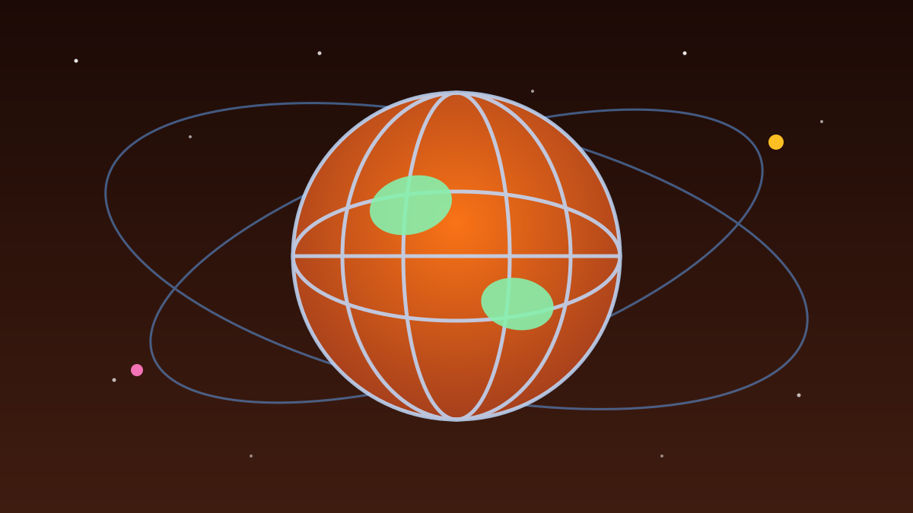

1 / 7

🌍 DUNIA
Fenomena Iklim "Monster" Lagi Ngintip — dan Indonesia Kena Imbasnya
Para ilmuwan memprediksi El Niño tahun ini bisa jadi yang terkuat dalam 70 tahun terakhir. UNICEF sampai kasih peringatan global. Geser buat detailnya →
2 / 7
📡
Peluang 75%: Terkuat Sejak 1950-an
Mark Merrifield dari Scripps Institution of Oceanography bilang anomali suhu permukaan laut di Pasifik Khatulistiwa nunjukin sinyal kuat menuju fase Super El Niño (RadarAktual, Telset.id, Technology Indonesia).
Untuk periode Oktober–Desember 2026, ada peluang 75 persen fenomena ini jadi peristiwa bersejarah yang kekuatannya melampaui rekor El Niño sebelumnya sejak tahun 1950-an.
3 / 7
🌊
Angkanya Ngeri: Suhu Pasifik Melonjak
Indeks Niño 3.4 — indikator utama kekuatan El Niño — saat ini tercatat di angka positif 0,5 derajat Celcius dan diperkirakan menembus rata-rata positif 3,0 derajat Celcius hingga Februari 2027 (RadarAktual, Telset.id).
NOAA juga mencatat suhu permukaan laut Pasifik tropis melonjak hingga 6,1 derajat Fahrenheit di atas normal pada Oktober 2026, dengan peluang 90 persen fenomena sangat kuat terjadi musim gugur–dingin ini (Infonasional).
4 / 7
🧒
UNICEF: 347 Juta Anak Terancam
UNICEF merilis analisis yang memperingatkan dampak serius kekeringan dan curah hujan ekstrem terhadap akses air bersih, nutrisi, dan pendidikan anak di hampir 100 negara (Infonasional).
Wilayah Asia dan Pasifik jadi area terdampak terbesar dengan 190 juta anak, disusul Afrika Timur–Selatan dan Amerika Latin–Karibia masing-masing 41 juta anak. Direktur Eksekutif UNICEF Catherine Russell mengingatkan: bagi anak-anak, El Niño bisa berarti pengungsian, kurang gizi, kelangkaan air, sampai penutupan sekolah.
5 / 7
🇮🇩
Indonesia: Waspada Karhutla sampai Krisis Pangan
Peneliti Senior BRIN Erma Yulihastin menyebut kajiannya menyoroti risiko produksi padi dan tekanan panas lingkungan — dengan Kalimantan dan Papua paling rentan terhadap panas dan potensi kebakaran hutan (Technology Indonesia, RadarAktual, Telset.id).
Berdasarkan simulasi 14 model iklim NASA, ancaman kekeringan diproyeksikan masih berlanjut hingga 2027–2028. Kemarau berkepanjangan berisiko menekan produksi padi yang ujung-ujungnya bisa bikin harga beras naik di pasaran.
6 / 7
🏥
WHO Ikut Bunyikan Alarm Kesehatan
Organisasi Kesehatan Dunia (WHO) memperingatkan El Niño mengancam kesehatan global dan berpotensi memicu lonjakan wabah — interaksi fenomena ini dengan pemanasan global memperparah gelombang panas dan cuaca ekstrem (SustainLife Today).
Pesan kuncinya: masih ada kesempatan bertindak sekarang, sebelum risiko berubah jadi krisis besar. Mitigasi lintas negara — termasuk riset bersama BRIN dan Amerika Serikat — terus diperkuat.
7 / 7
🤔
Efeknya ke lo apa?
Buat lo di Indonesia: siap-siap musim kemarau yang lebih panjang dan panas yang lebih nyengat. Harga bahan pokok — terutama beras — berpotensi merangkak naik kalau produksi padi keganggu. Budget jajan dan belanja bulanan perlu diantisipasi.
Yang tinggal di daerah rawan karhutla (Sumatera, Kalimantan): waspadai kabut asap yang bisa balik lagi. Jaga kesehatan, siapin masker, dan pantau info resmi BMKG — bukan cuma ramalan cuaca di grup WA keluarga.